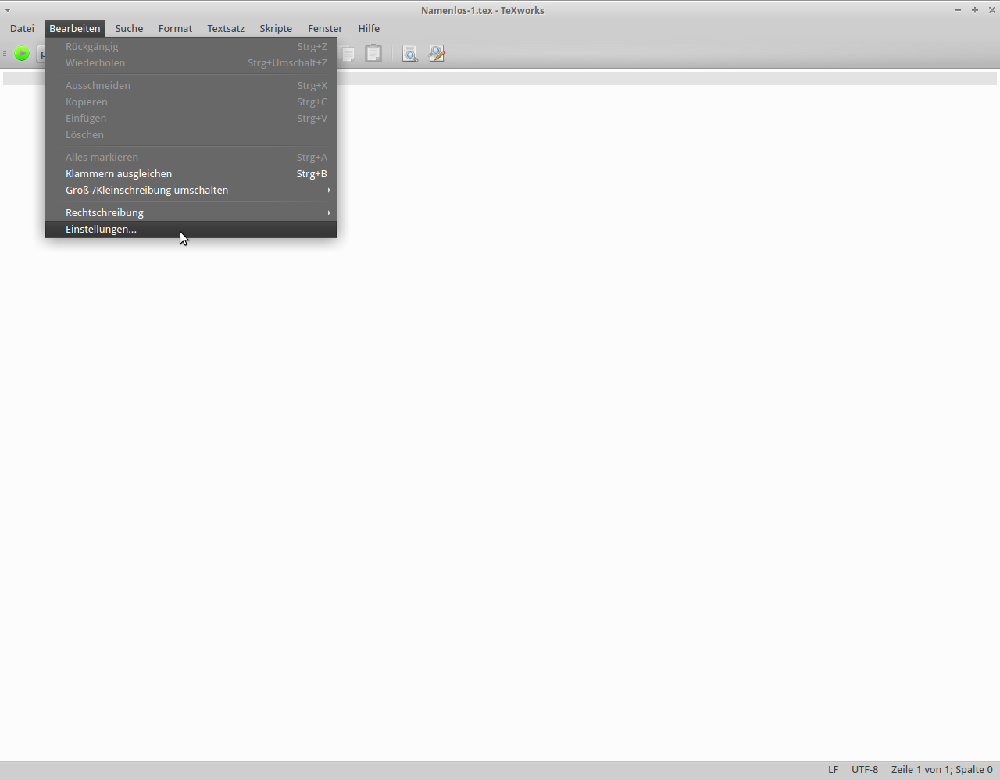
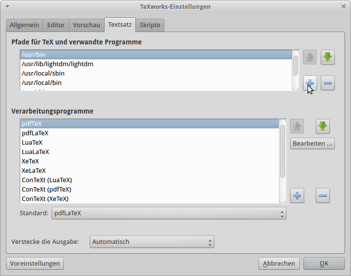
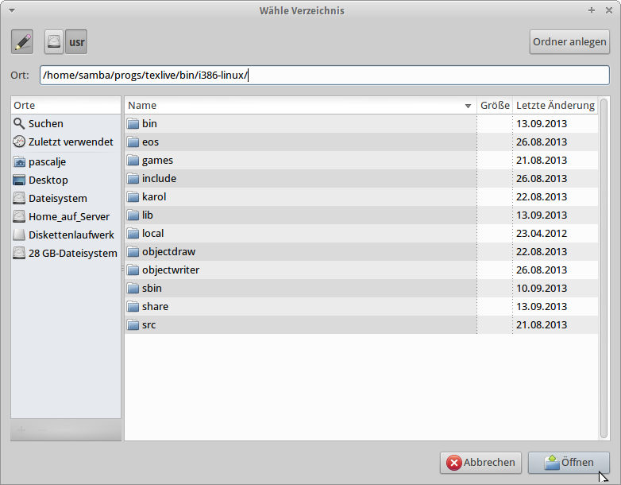
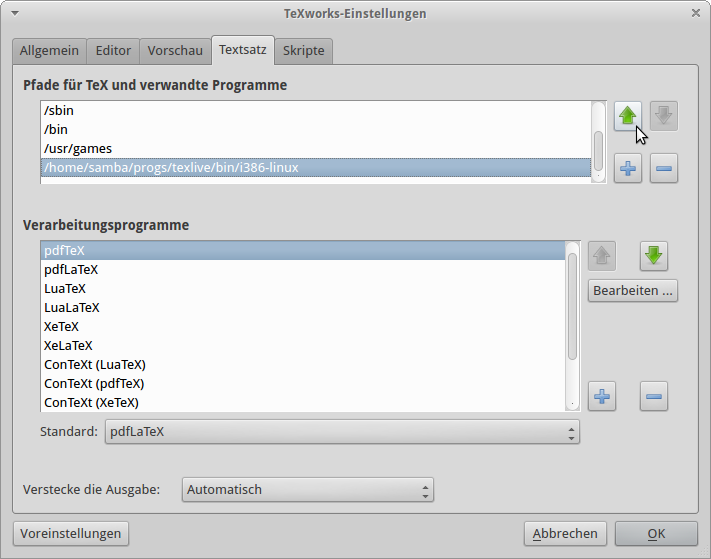

TeXworks - Vorlagen einbinden
Schritt 1. Öffne TeXworks.
Schritt 2. Klicke auf Bearbeiten und dann auf Einstellungen

Schritt 3. Klicke nun auf die Kategorie Textsatz.
Schritt 4. Klicke nun auf den grünen Knopf um einen Pfad hinzuzufügen!

Schritt 5. Nun öffnet sich ein Fenster, klicke auf den Stift und gib folgenden Pfad ein und klicke auf Öffnen
/home/samba/progs/texlive/bin/i386-linux/

Schritt 6. Klicke nun so oft wie möglich auf den grünen Pfeil um den Pfad nach oben zu verschieben!

Schritt 7. Nun sind eure Vorlagen eigebunden!